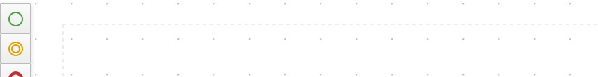

Smart Scroll for BPMN/DMN Editors
Introducing Smart Scroll
Creating and managing BPMN/DMN resources can be a daunting task. Projects can come in many shapes and sizes and with varying levels of complexity. Consequently, being able to locate and identify nodes is of utmost importance. Focusing on easing the load of such demands, we introduce Smart Scroll for BPMN/DMN editors. Available for Kogito v0.16.0, this new feature enables scroll by dragging a canvas element close to a border. With it, node placement becomes a more natural task.
Using Smart Scroll
To activate it, drag any canvas element (e.g., all nodes, bend points, and connection points) closer to the canvas border. Then, while still holding the mouse drag button, cease mouse movement. As a result, scrolling starts in the desired direction. Mind you, due to canvas limitations, scrolling beyond the origin limit (depicted by the dashed lines) is not possible.

Scroll Bar Improvements
By itself, the Smart Scroll already proves valuable. But, to stand out and give that "just right" feeling, other changes were necessary. Next, we discuss them and show a side-by-side comparison of old vs. new to highlight the differences.
The first change is real-time updates. In sum, there is no need to end element drag for the scrollbar to update. It happens as soon as there is drag movement. In the comparison below, pay attention to the scroll bar at the bottom.
Next, we have canvas pan synchronization. In short, canvas pan updates the scroll bar. As a result, the scroll bar position and canvas pan are always in sync. Again focus on the scroll bar at the bottom to spot the difference.
Lastly, there is canvas size calculation. In brief, besides the existing elements, we also consider the visible area of the canvas. Due to this, there are no awkward jumps after dragging or scrolling.
Conclusion
In conclusion, high cohesion while maintaining usability was the key goal here. We hope this will help users have a better experience using our editors.
Make sure to check out our blog. You can stay up to date on our releases, new tools and have access to exceptional articles. Thanks for reading. See you next time.